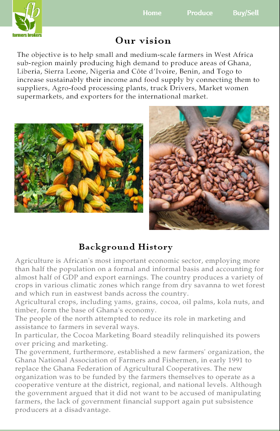
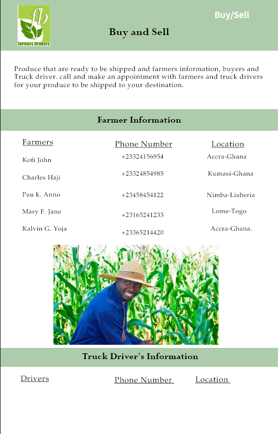

Overview
Purpose
The objective is to help small and medium-scale farmers in West Africa sub-region mainly producing high demand to produce areas of Ghana, Liberia, Sierra Leone, Nigeria and Côte d’Ivoire, Benin, and Togo to increase sustainably their income and food supply by connecting them to suppliers, Agro-food processing plants, truck Drivers, Market women supermarkets, and exporters for the international market.
Audience
The target audience will be the Farmars from different countries who wants to sell their farm produce. Second are the buyers who are ready to buy the farm produce from these farmers.
There will be supplyers and Truck drivers as well.
Branding
Farmers Broker Logo

Style Guide
Color Palette
Palette URL: https://coolors.co/619d06-4e6119-85955f-ffffff| Primary | Secondary | Accent 1 | Accent 2 |
|---|---|---|---|
| [#619D06] | [#4E6119] | [#85955F] | [#FFFFFF] |
Typography
Heading Font: Titillium
I think the reason why I choose this font is because it look simple and it will stand out if i use it for my heading.
Paragraph Font: Source Sans Pro
I really love this font and it is commonly use in graphic designing, it is easy to read and it has a little bit of style.
Background History
Agriculture is African's most important economic sector, employing more than half the population on a formal and informal basis and accounting for almost half of GDP and export earnings. The country produces a variety of crops in various climatic zones which range from dry savanna to wet forest and which run in eastwest bands across the country. Agricultural crops, including yams, grains, cocoa, oil palms, kola nuts, and timber, form the base of Ghana's economy.
Colored paragraph example
We make sure to connet all the farmers and seller in Africa
Navigation
Site Map
Content
History about agriculture in Africa
Agriculture is African's most important economic sector, employing more than half the population on a formal and informal basis and accounting for almost half of GDP and export earnings. The country produces a variety of crops in various climatic zones which range from dry savanna to wet forest and which run in eastwest bands across the country.
Agricultural crops, including yams, grains, cocoa, oil palms, kola nuts, and timber, form the base of Ghana's economy.
The people of the north attempted to reduce its role in marketing and assistance to farmers in several ways.
In particular, the Cocoa Marketing Board steadily relinquished its powers over pricing and marketing.
The government, furthermore, established a new farmers' organization, the Ghana National Association of Farmers and Fishermen, in early 1991 to replace the Ghana Federation of Agricultural Cooperatives. The new organization was to be funded by the farmers themselves to operate as a cooperative venture at the district, regional, and national levels. Although the government argued that it did not want to be accused of manipulating farmers, the lack of government financial support again put subsistence producers at a disadvantage.
Cocoa Plantation


Produce
For over 81 years Agriculture in Ghana has been regulated by one of its highest yielding exports-Cocoa.Cocoa is Ghana's principal agricultural export.
Cocoa production occurs in the forested areas of Ghana: Ashanti Region, Brong-Ahafo Region, Central Region, Eastern Region, Western Region, and Volta Region.
The crop year begins in October while the smaller mid-crop cycle starts in July. All cocoa, except that which is smuggled out of the country, is sold at fixed prices. Although most cocoa production is carried out by peasant farmers,
small number of farmers appear to dominate the trade.The government controls the industry through the Ghana Cocoa Board (Cocobod). As of 2010, Ghana's cocoa bean exports were valued at $2,219.5 million (US)
Avialable produce


Buy/Sell
Produce that are ready to be shipped and farmers information, buyers and Truck driver.
Farmers information
Prices of products
Loaction
Truck Driver information.


Wireframes
Create three wireframes for your site. One for each page and list them here
Home
[Any additional details about home that the wireframe does not make clear]
[Page 2]
[Any additional details about page 2 that the wireframe does not make clear]

Home
Wireframes are like blueprints for making webpages. They should show the major sections of content that will be on the page and the relative locations of each element. In the wireframe below you can see there will be 6 sections to our page: At the top we have a section with the logo (the box with the mountain means an image) and the navigation bar. Then there is a banner image that stretches all the way across the screen. Next we have some text and an image ...followed by another row made up of an image and some text. Then one more section of text with no image. Lastly, a footer containing a copyright/name line and 3 social media icons.
.png)

[Page 3]
[Any additional details about page 3 that the wireframe does not make clear]
